Bonjour à tous. C'est encore Tiffany. Je suis très heureuse de vous retrouver dans ce nouvel article. Aujourd'hui, je vous emmène en voyage dans toute la Russie à travers le très célèbre train : le Transsibérien.
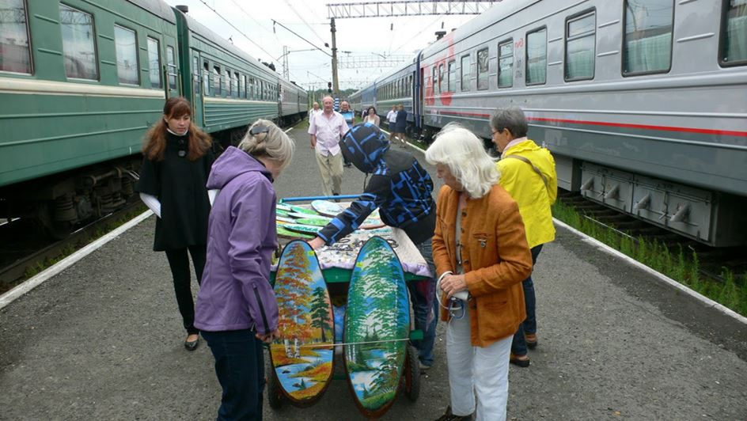Il y a un mois, j’ai eu la chance de rencontrer deux voyageuses géniales : deux Françaises, Estelle (de Paris) et Carole (de Strasbourg). Elles sont parties toutes les deux en voyage en Russie pendant plus de 2 mois. Elles ont pris à l'aller : le Transsibérien et ont fait le voyage d'une seule traite de Moscou à Vladivostok. Vous avez bien compris, elles sont restées 6 jours et demi dans le ce train légendaire !! Quelle aventure !!! Puis pour rentrer, elles ont pris le train, le bus, ont fait du stop… Une autre belle aventure !!!
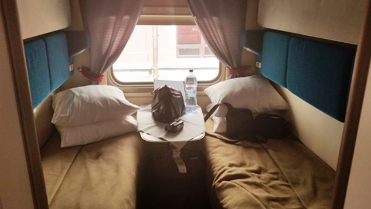Elles m'ont racontée leur voyage, pour que je vous le raconte à mon tour et, je peux vous dire dès maintenant : c'est incroyable !! J'en ai les yeux qui piquent et les mains qui tremblent car ce voyage que je vous propose, va vous emmener dans la Russie que j'aime, parmi les Russes que j'affectionne de tout mon cœur.
Êtes-vous prêt cher voyageur pour cette belle aventure ? Donnez-moi la main, je vous emmène dans le Transsibérien et dans l'Est de la Russie.
C'est fin juillet et votre date de départ pour la Russie approche à grand pas. C'est la dernière ligne droite pour préparer vos bagages. Un sac à dos de 50 litres où vous rangez tant bien que mal : une tente, un sac de couchage, un peu de vaisselle, un appareil photo argentique pour prendre de sublimes photos, un portable, quelques vêtements et un dictionnaire français-Russe.
Ah oui ! Vous ne savez pas parler russe. Vous savez lire le cyrillique et vous connaissez quelques mots de russe, des formules de politesse surtout...
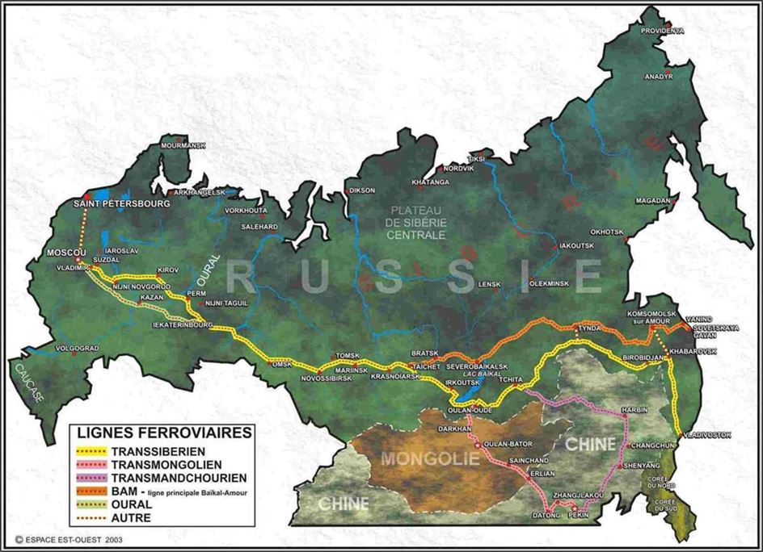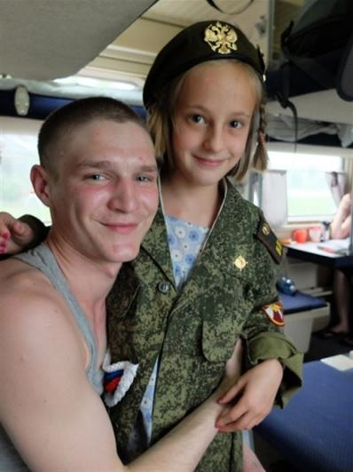Viennent les derniers conseils de départ de votre entourage : « Attention à l'alcool !! T'es sûr de vouloir faire l'aller en une seule fois ? C'est 6 jours et demi quand même ?! Tu vas peut-être t'ennuyer à mourir dans le train... » Vous-même, vous finissez par vous dire : « Est ce que je ne vais pas péter un câble dans le train, comme ils me le disent tous... »
Puis, c'est le Jour J !! Vous prenez l'avion et vous passez quelques jours sur Moscou. Vous ne vous souvenez même plus de ce que vous en avez vu. Vous avez surtout rencontré des amis d'amis et reçus leurs recommandations : « Attention à l'alcool !!! » Ça y est ! C'est parti pour la longue traversée de toute la Russie. C'est parti pour 9288 km !! Le plus grand continent du monde !! « Vous rendez vous compte de ce que vous allez accomplir ? »
Le voyage se passe extrêmement bien. Vous vous répétez que vous avez beaucoup de chance car vous tombez sur des gens, des russes très sympas. Des militaires pour la plupart qui rejoignent leur base. Et, des gens qui partent en vacances.
Il y a une bienveillance qui règne dans le train. Les gens font attention à ce que tout se passe bien pour vous. Vous, l'étranger qu'ils pensent un peu marteau : « Quoi ? Votre rêve, c'est de prendre le Transsibérien ? Mais c'est qu'un train ?! Pour moi, c'est juste parce que c'est moins cher que l'avion... qu'est-ce que c'est lent ! »
Régulièrement, la chef de cabine vous demande si tout va bien et elle prend le temps de vous expliquer certaines choses. La communication n'est pas aussi difficile que vous aviez pu l'imaginer. Les russes autour de vous sont patients. Ils utilisent des traducteurs sur leur téléphone. Ils utilisent même votre dictionnaire et essaient d'échanger avec vous en français pour s'amuser.
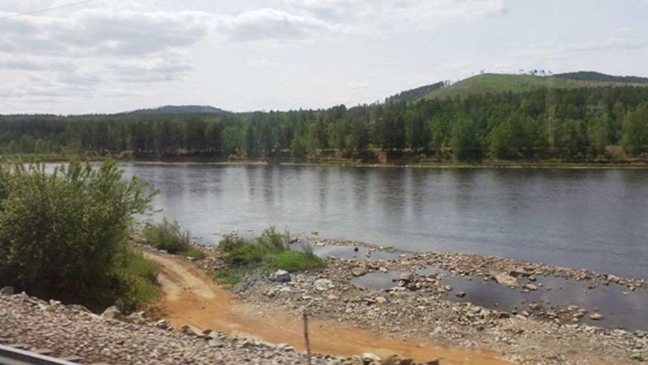Vous vous répétez inlassablement que vous avez beaucoup de chance, que vous êtes tombé sur les bonnes personnes pendant ces 6 jours et demi.
Deux seuls points noirs au tableau : la bonne nourriture et la douche vous manquent...
Apres 6 jours et demi de traversée, vous débarquez à Vladivostok !!!! Hourra !!!
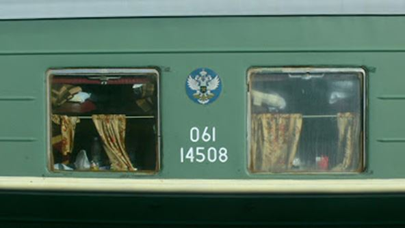Vous vous rendez compte très rapidement que vous n'avez pas eu de chance dans le Transsibérien : les russes sont tous bienveillants et patients avec vous. Jamais, ils ne se moquent de votre accent ou de vos erreurs. Vous n’êtes pas un touriste aux poches remplies d'euros. Ils s'intéressent à vous et à votre culture. Ils vont même jusqu'à ne pas aller au travail pour vous faire visiter leur ville.
Quand vous leur demandez : « Mais ça ne pose pas de problème que tu n'ailles pas au travail ? » Ils vous répondent en haussant les épaules : « чуть-чуть » (tchout-tchout) « un peu ».
L'Est de la Russie vous réserve les plus belles surprises. Tout d'abord, vous découvrez le train malheureusement encore méconnu : le Baikal-Amour. La ligne passe plus au nord que le Transsibérien. Vous vous émerveillez car les paysages sont enchanteurs.
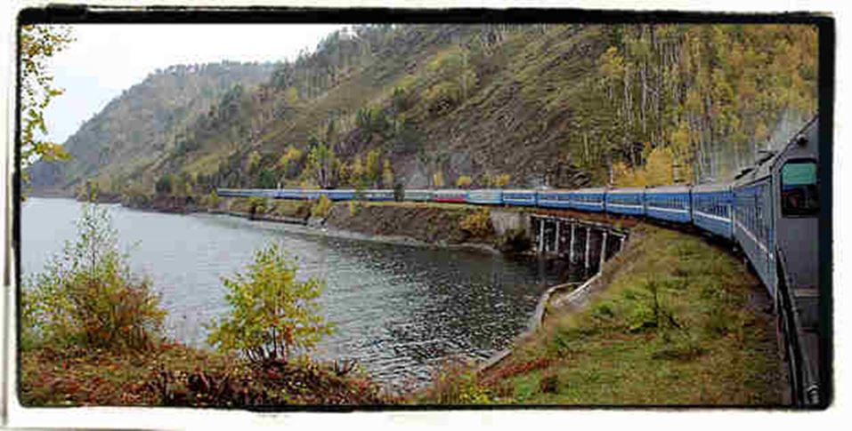Dans le sud-est, les russes vous montrent une nature extraordinaire. Ils vous disent qu'elle ressemble à celle que l'on trouve en Mongolie. Vous êtes transporté. Certains russes même, ont les yeux qui brillent d'émotion. Parfois même, vous pouvez apercevoir une petite larme coulée parce que, eux aussi, ils aiment leur pays et sa nature.
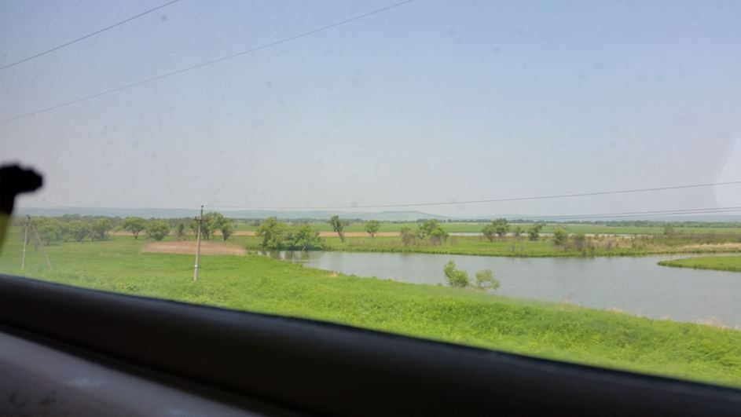"Quoi ? Les russes sont émus ? Il y a donc un cœur sensible sous cette montagne de chair ?" Oh oui, les Russes ont un grand cœur.
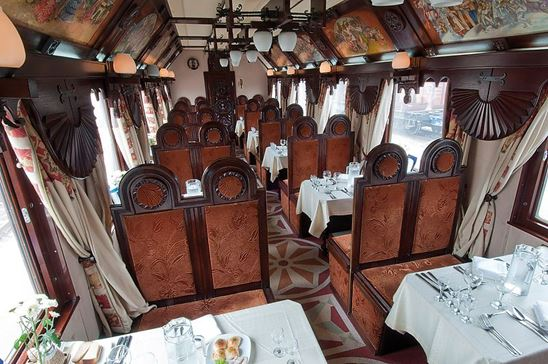 Dans le TranssibérienParfois, vous leur faites même de la peine, sans le vouloir. Ils sont tristement déçus que vous ne connaissiez que trop peu de choses de leur magnifique pays, de sa culture et de ses artistes : « Mais voyons, vous ne connaissez pas ça de la Russie, en France ? » Parfois les russes se lancent dans un monologue de plusieurs minutes, sur les politiciens et les clichés qui circulent sur leur pays. Vous savez qu'il faut éviter de parler politique, surtout quand on ne maitrise pas la langue.
Alors, une chanson chantée, un verre partagé, et les russes retrouvent leur bonne humeur. Les Russes sont des gros nounours. Oui, j'ose l'écrire, cher voyageur ! Les Russes sont des gros nounours. Leur cœur est immense, bienveillant et généreux.
« Connaissez-vous un pays où à chaque étape de votre parcours, vous rencontrez des gens qui appellent tout le répertoire de leur téléphone, car vous venez de leur dire que vous ne savez pas encore où dormir ? Que la personne vous emmène elle-même à l'hôtel ou un ami à elle que vous ne connaissez pas vient vous chercher à la gare ? Vous connaissez beaucoup de pays comme la Russie ? »
Sans rien vous demander en retour, les russes vous ouvrent même les portes de leur maison. Ils vous font visiter leur ville et les alentours. Et à chaque fois, à chaque fois !! Ils vous raccompagnent à la gare pour s'assurer que tout va bien. Il y a aussi tous ces Russes qui vous laissent leur numéro de téléphone sans jamais vous déranger, juste au cas où vous ayez besoin de leur aide.
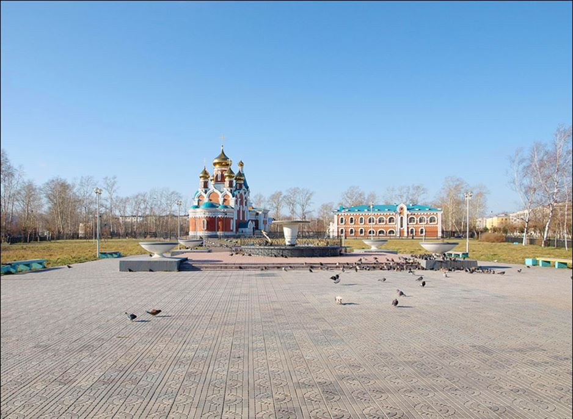Et puis il y a cette femme, qui parle à une amie sur un banc à Komsomolsk. Vous lui demandez de confirmer l'endroit où vous vous trouvez. Vous cherchez un magasin pour acheter une pile pour votre bel appareil photo.
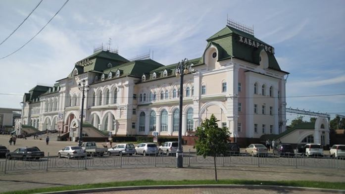En Russie, vous découvrez rapidement que tout est mal indiqué... il y a peu de panneaux et même Google Maps est bien capricieux, dans l'Est de la Russie surtout. Heureusement ! C'est tellement facile de demander des renseignements dans la rue. Les russes sont toujours prêt à vous renseigner.
En même temps, vous êtes en train de lui demander son téléphone pour appeler, tout ça dans un russe très maladroit. Elle a peur sûrement.
Tous les russes vous aident. Quand ils ne savent pas, ils demandent pour vous ou même ils vont chercher le renseignement et reviennent vers vous pour vous donner l'information. Il y a des fois, à des arrêts de bus, vous demandez votre trajet à une personne qui ne sait pas, qui demande à sa voisine, qui demande à son voisin... Et d'un coup, tous les gens qui attendent le bus se mettent à discuter au sujet de votre trajet de bus.
"Whaou ! N'est-ce pas mieux que d'utiliser Google dans son coin ?"
Bref ! Je reprends le récit. Vous demandez à une dame qui discute avec son amie sur un banc : « Bonjour, sommes-nous bien à telle adresse ? Je cherche ce magasin ? » Cette femme vous répond : « Venez avec moi, je vous emmène au magasin. » Vous : »Quoi ? Vous êtes sûre ? mais vous êtes avec votre amie... je veux pas vous déranger. » La femme pense sûrement comme beaucoup de russes : « Ohlala qu'ils sont maniérés ces français. Si je te dis que je le fais, c'est que je veux le faire. Alors n'hésitez pas. Répondez-moi simplement oui ou non. »
Cette femme vous emmène à un premier magasin qui ne peut rien pour vous. Elle vous fait passer par la porte au fond du magasin et vous arrivez dans un second magasin. Là, la vendeuse a un visage très fermé. Vous êtes au tout début de votre voyage, vous n'avez pas encore compris que les Russes ne sourient pas sans une bonne raison. Alors, cette vendeuse vous regarde avec le visage fermé. Elle parle en russe avec la femme qui vous accompagne. Cette dernière part et vous laisse seul avec la vendeuse qui a toujours le visage fermé. Vous vous dites : « Qu'est-ce que je fais là ? » Un homme entre dans le magasin, tend de l'argent à la femme et ils se mettent à discuter ensemble. Vous vous répétez « Qu'est-ce que je fais encore là ? » La femme se retourne vers vous : « Suivez-le. » Vous : « Euh ok »
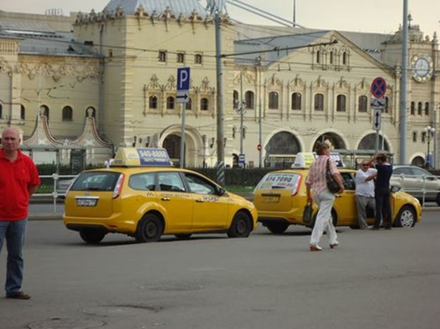Vous suivez l'homme qui s'avère être un chauffeur de taxi. Vous montez car il a un air sympathique, sans mauvaise intention et puis... que faire d'autre ? Il vous explique qu'il vous emmène à un magasin. Sur la route, il vous demande qui vous êtes et ce que vous faites en Russie. Il vous écoute. Vous êtes arrivés. Vous lui demandez son numéro car demain vous auriez aimé visiter un village à côté et comme il ne conduit pas trop mal... (La conduite russe est « particulièrement sportive »)
Vous entrez dans ce 3e magasin qui n'a pas non plus la pile que vous cherchez. Le directeur et sa secrétaire vous font monter à l'étage, dans le bureau et vous impriment un plan pour un 4e magasin. Le directeur y ajoute des indications. Il vous écrit l'adresse en cyrillique, en majuscules et en minuscules. Quelle gentillesse !
Cher voyageur, n'est-ce pas incroyable cette bienveillance ? (Cette générosité même…) Vous pourriez vous dire : « Mais comment être sûr qu'il ne m'arrivera rien si je suis des personnes que je ne connais pas. » Estelle et Carole me disaient une phrase qui m'a marquée : « À aucun moment, je n'ai senti de mauvaises intentions chez les Russes. Et de toute façon, si un Russe te recommande quelqu'un, rien ne peut t'arriver. »
Évidemment cher voyageur, je compte sur votre intuition et votre sens de l'observation car comme dans tous les pays du monde, la Russie compte sûrement un petit nombre de personnes malintentionnées. Heureusement, nos deux voyageuses n'en n'ont pas rencontrées pendant leur 2 mois d'aventure. Super !!
Je continue sur le récit : « La quête de la pile ! » comme je m’amuse à l’appeler.
Oui, oui, ce n'est pas encore fini ! Il y a encore de belles surprises. Tout ça, grâce à une pile vous imaginez ?
Après le 3e magasin dans lequel le directeur vous a imprimé un plan pour un 4e magasin, vous rentrez vous reposer. Il est tard. Le lendemain matin, vous appelez le chauffeur de taxi, rencontré la veille, pour aller au village en passant par le 4e magasin.
Le chauffeur vient vous chercher et il vous emmène au magasin. Là-bas, il rentre avec vous et explique au vendeur ce que vous voulez. Le vendeur vous dit : « Je n'ai plus de pile comme celle-ci. Enfin si, j'en ai une mais elle est périmée. Tenez, je vous la donne. »
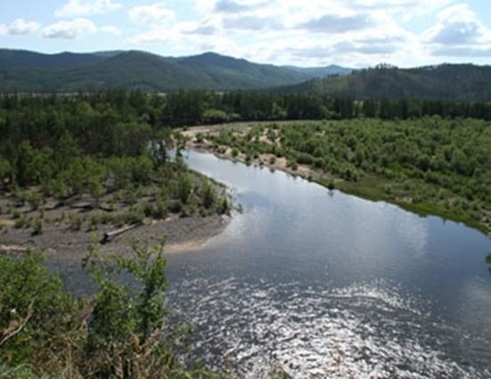Une fois sorti du magasin, le chauffeur de taxi vous dit : « Je ne vous conseille pas d'aller au village à côté, ce n'est pas joli. Je peux vous amener de l'autre côté du fleuve Amour, c'est très beau. »
Et ce chauffeur de taxi très généreux va se balader avec vous toute la journée, sans rien vous demander en retour…
Je ne sais pas pour vous cher voyageur, mais moi quand je vous écris ces mots, j'ai mes yeux qui s'emplissent de larmes d'émotions. Quelle aventure humaine ! Et vous savez que Carole et Estelle m'en ont racontées des tas comme celle-ci.
Les Russes ont l'air si froids au premier abord... Et, au bout de quelques mots échangés avec vous, un sourire sincère transforme leurs visages. Ils vont prendre très à cœur votre curiosité de leur culture et votre venue dans leur pays. Ils deviennent vos protecteurs, ils se sentent responsables de votre confort. Et ils deviennent aussi vos guides touristiques. Les Russes sont fiers de leur pays. Ils mettent donc un point d'honneur à ce qui vous gardiez un beau souvenir de leur ville et de leur pays.
Estelle et Carole me disaient cette phrase qui m'a marquée, cher voyageur. Je vous la partage : « La Russie est l'un des rares pays, où vous pouvez vous permettre de ne rien organiser, où vous pouvez goûter à l'hospitalité, la bienveillance et le partage. »
Je vous dis à très bientôt et en attendant, je vous encourage à rester curieux du monde qui t’entoure.
Partager cette page